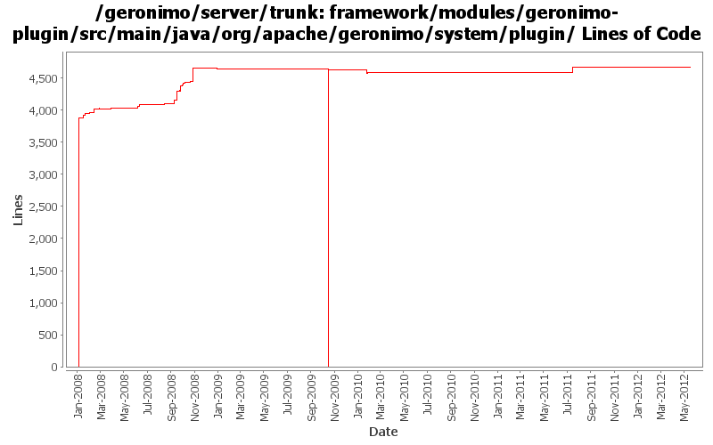

[root]/framework/modules/geronimo-plugin/src/main/java/org/apache/geronimo/system/plugin

| Author | Changes | Lines of Code | Lines per Change |
|---|---|---|---|
| Totals | 167 (100.0%) | 10059 (100.0%) | 60.2 |
| djencks | 119 (71.3%) | 9549 (94.9%) | 80.2 |
| gawor | 13 (7.8%) | 163 (1.6%) | 12.5 |
| rwonly | 3 (1.8%) | 124 (1.2%) | 41.3 |
| linsun | 10 (6.0%) | 75 (0.7%) | 7.5 |
| jdillon | 4 (2.4%) | 48 (0.5%) | 12.0 |
| xuhaihong | 10 (6.0%) | 43 (0.4%) | 4.3 |
| dblevins | 2 (1.2%) | 36 (0.4%) | 18.0 |
| jbohn | 2 (1.2%) | 13 (0.1%) | 6.5 |
| rickmcguire | 1 (0.6%) | 4 (0.0%) | 4.0 |
| xiaming | 1 (0.6%) | 2 (0.0%) | 2.0 |
| kevan | 1 (0.6%) | 1 (0.0%) | 1.0 |
| genspring | 1 (0.6%) | 1 (0.0%) | 1.0 |
GERONIMO-6353 Add "DynamicImport-Package: *" when using install-bundle command to transform a jar into a bundle, for trunk
2 lines of code changed in 1 file:
GERONIMO-6240 Fix the InstallModulesMojo to work without osgi or a kernel
16 lines of code changed in 2 files:
GERONIMO-6240 Make several base geronimo functions (kernel, deployer, etc) DS services and make the car-maven-plugin take advantage of that. Server assembly doesn't work yet, builds framework.
21 lines of code changed in 2 files:
GERONIMO-5586 modify the algorithm to calculate Artifact
24 lines of code changed in 1 file:
GERONIMO-5764 some improvements of bundle recorder:
(1) use the logic in pluginInstallerGBean when install bundle, so that the Artifact could be calculated the same way, and also can convert a normal jar if the file is not an OSGi bundle.
(2) when delete an item in startup.properties, also delete the odd empty lines.
1 lines of code changed in 1 file:
GERONIMO-5586 Modified the previous code logic so that it can work and add the ability to install library cli
99 lines of code changed in 1 file:
GERONIMO-6058 Replace StringBuffer usage with StringBuilder
7 lines of code changed in 4 files:
GERONIMO-4757 "java.lang.IllegalStateException" error when use install-plugin goal (Based on the patch from viola.lu)
2 lines of code changed in 1 file:
GERONIMO-5637 deploy install-plugin command does not report failure when plugin is failed to install, Thanks Viola for the patch.
1 lines of code changed in 1 file:
GERONIMO-5057 Use those xmlbeans generated by JAVA EE 6 schema files
1 lines of code changed in 1 file:
provide more info on file copy error
7 lines of code changed in 1 file:
fix unix permissions for bin scripts
18 lines of code changed in 1 file:
GERONIMO-5008 Create util methods for all the Geronimo components
17 lines of code changed in 1 file:
GERONIMO-5008 Create util methods for all the Geronimo components
3 lines of code changed in 1 file:
GERONIMO-4987 Use ConcurrentHashMap instead of Collections.synchronizedMap(new HashMap())
Patch provided by Jack Cai.
4 lines of code changed in 1 file:
GERONIMO-4916 step 2 move sandbox osgi framework into trunk
4633 lines of code changed in 23 files:
GERONIMO-4916 step 1 remove old framwork
0 lines of code changed in 26 files:
GERONIMO-4230 When installing a plugin that is already existed, we still give people confusing missingDependency message (Patch from Han Hong Fang)
3 lines of code changed in 1 file:
GERONIMO-4070 Plugin installer fails to install after previous attempt of a plugin has failed. (Patch from Shawn Jiang)
10 lines of code changed in 1 file:
Warn instead of failing on bad repos. Based on patch from Ivan (GERONIMO-4547)
12 lines of code changed in 1 file:
revert some of the changes in rev708650 as it causes GERONIMO-4479 Custom server assembly does not work
7 lines of code changed in 1 file:
GERONIMO-4382. Fix persistentConfigurationList reference so new server instance command actually works
2 lines of code changed in 1 file:
GERONIMO-4382 Use plugin installing to create a new server instance in a geronimo installation. Also requires separating boilerplate into the installation and server (var) bits
222 lines of code changed in 4 files:
GERONIMO-4370 improve usage of default-repository in plugin catalog
12 lines of code changed in 1 file:
GERONIMO-4346 c-m-p leaves invalid plugin in plugin catalog and doesn't update plugin catalog when desp is updated
4 lines of code changed in 1 file:
inform users that the .car module is already installed, introduced by changes of GERONIMO-4318
1 lines of code changed in 1 file:
Print the repo URI when no connection can be made
7 lines of code changed in 1 file:
GERONIMO-4319 - All plugin groups are shown as installable from the install plugin portlet
21 lines of code changed in 1 file:
Inroduced a MulticastLocation gbean that hold the mutlicast connection info so it can be configured in one place yet consumed by multiple gbeans.
Added a HeartbeatMonitor ghsell command (not quite working) that will allow people to see what is moving on the heartbeat.
Renamed FarmCommand to ClusterCommand and its flags to -c and --cluster
29 lines of code changed in 1 file:
GERONIMO-4326 Update Repository List action in Plugins portlet is broken
8 lines of code changed in 2 files:
GERONIMO-4328 Fix problems with installed plugins tracking: c-m-p assembly now tracks plugins, PluginInstallerGBean is now configured to track plugins, and bug fixed in save method
1 lines of code changed in 1 file:
GERONIMO-4318 try to indicate when plugins have been installed in the current server, irrespective of whether they are in the repos
94 lines of code changed in 2 files:
GERONIMO-4318 revert change that breaks plugin farming and running multiple servers off of one repository
10 lines of code changed in 2 files:
GERONIMO-4318 - All the plugins are marked as installable on the install plugins portlet
17 lines of code changed in 2 files:
GERONIMO=4284 Add remove plugin (from plugin list) and remove plugin list (from cluster) commands
5 lines of code changed in 1 file:
GERONIMO-4239 Reaarrange some jsr88 related classes to fix a nasty classcast exception in the offline deployer. Move some farming classes around to eliminate an inessential dependency on deployment code
10 lines of code changed in 1 file:
GERONIMO-4309 use EncryptionManager to obscure plugin repo registry passwords
9 lines of code changed in 1 file:
deja vu
1 lines of code changed in 1 file:
GERONIMO-4304 Register allowable plugin repositories, with credentials as appropriate
324 lines of code changed in 5 files:
log the configuration name as well
1 lines of code changed in 1 file:
(29 more)